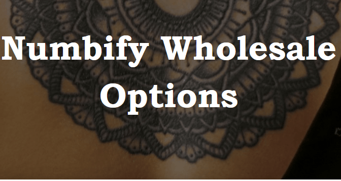
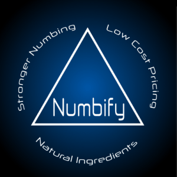
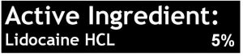
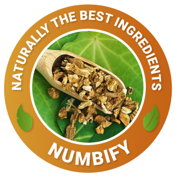
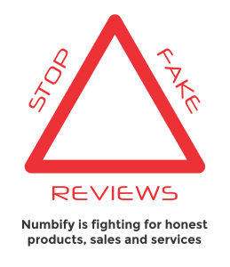

Wholesale Lidocaine Numbing Packages Now Available Nationwide

It seems these days everybody is talking about Numbify!From Mr.Anthony Ray on Youtube to several Top Ten numbing cream sites, Numbify is all the rage, knocking down the competition in side-by-side comparisons.With a combination of the legal maximum of lidocaine allowed over the counter, and a serious infusion of healthy all natural ingredients, it’s easy to see why Numbify is finding its way into the public eye.
Whether you own a tattoo/piercing shop, pharmacy, laser hair removal, or wax friendly day spa, you have probably heard about Numbify, but wondered where to get some.The great news is that Numbify is easy to order, right from Numbify.com, and when ordering one of our bulk priced counter display packs, you save 20% off the individual unit size.This is a great option whether you want to include the product into your pricing for a service, or just resale it at the individual unit price.The best part is that the products ship free, so you get to keep the whole 20% margins.
Interested in being a wholesale partner?On orders of $5,000 you get an additional 15% off the individual price!In case you were wondering, shipping is also free on wholesale orders, so that whole 35% profit margin is all for you.
Lets talk a little bit about what makes Numbify so superior to its competitors!Numbify designs its products around a triad of business principles.
Stronger Numbing – It’s not good enough to just be good enough.Numbify has scoured the earth finding the best ingredients that it can to not only bring you the soothing relief of lidocaine, but to augment its power and increase its effectiveness with healthy high quality, and often natural ingredients.This has left Numbify proudly standing alone after leaving its competitors in the dust in side-by-side testing.
Many of Numbify’s competitors have resorted to posting fake 5-star reviews on their products.Numbify proudly stands by their reviews and doesn’t feel the need to buy off the integrity of people reviewing.Instead Numbify has issued a challenge.Try us against your current brand, on us.We have opened this challenge to any business thinking about carrying our products.
So head on over to Numbify.com and sign up to get your free sample.There’s no obligation to buy, and Numbify is excited to hear what you think!!!
[bsa_pro_ad_space id=4]
Posted On: 2019-12-15T00:00:00






Content Date: 2019-12-15
Download Date: 2021-07-09
Document ID: L0C04DOEB